english-coach D1 風格方向比較（第 2 輪，最後一輪）
第 1 輪回饋：「硬要選會選 A，但都不理想；想要明顯更高級、精緻，接近 Apple iOS 的設計精神。」這一輪三個方向都在「iOS 式高級、精緻」的範圍內，但在材質、色溫、強調色、密度和鼓勵的呈現方式上刻意不同。全部只用系統字；不用 SF Symbols、不用 Apple 圖像、不學活動圈，圖示都是自己畫的。截圖是在 Roboto＋Noto Sans TC 下產生，就是你 Android 手機上的樣子。
R2-A 分組
一眼看完今天：像 iOS 健康摘要一樣，把今天收成幾組安靜、整齊的清單。
- 整齊
- 冷靜
- 熟悉
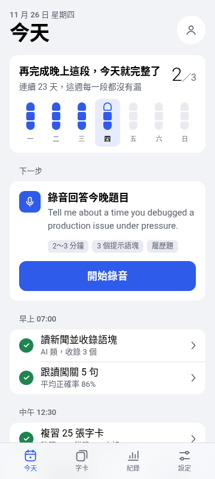
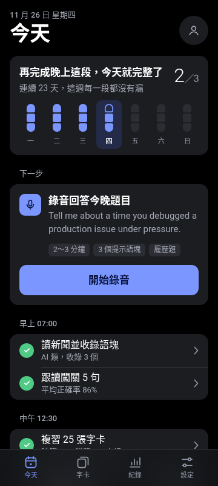
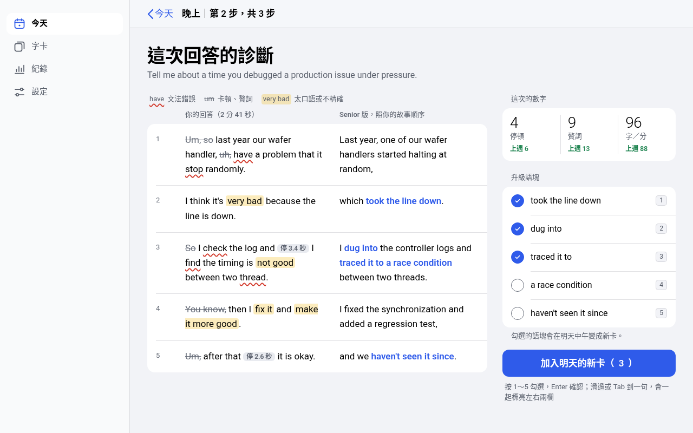
高級在哪裡（留白、層次、材質、動態）
大標題＋分組清單的層次；半透明上下列與髮絲分隔線；週膠囊用三段小格表示早中晚，細字數字收斂情緒。
和 round 1 的 A 差在哪裡
保留 A 的鈷藍與「一週一眼看完」，但拿掉三圈、窄體字和檸檬黃計分板；改成 iOS 式分組清單與細字數字，從運動感變成整齊感。
適合
- 想要「打開就懂」、和手機設定頁一樣熟悉
- 早中晚狀態要逐項看清楚
不適合
- 想要更有個性、一眼記得住的畫面
- 分組卡片多，晚上診斷頁資訊量大時略擠
R2-B 留白
少即是多：像 Things 一樣，用大量留白和一條琥珀色刻度，讓每天的練習像一頁乾淨的手帳。
- 安靜
- 溫暖
- 文字感
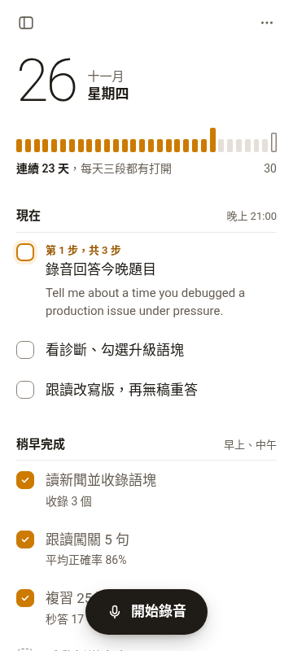
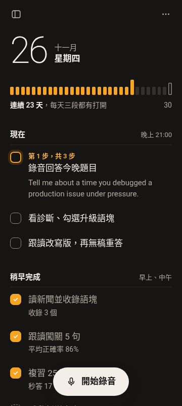
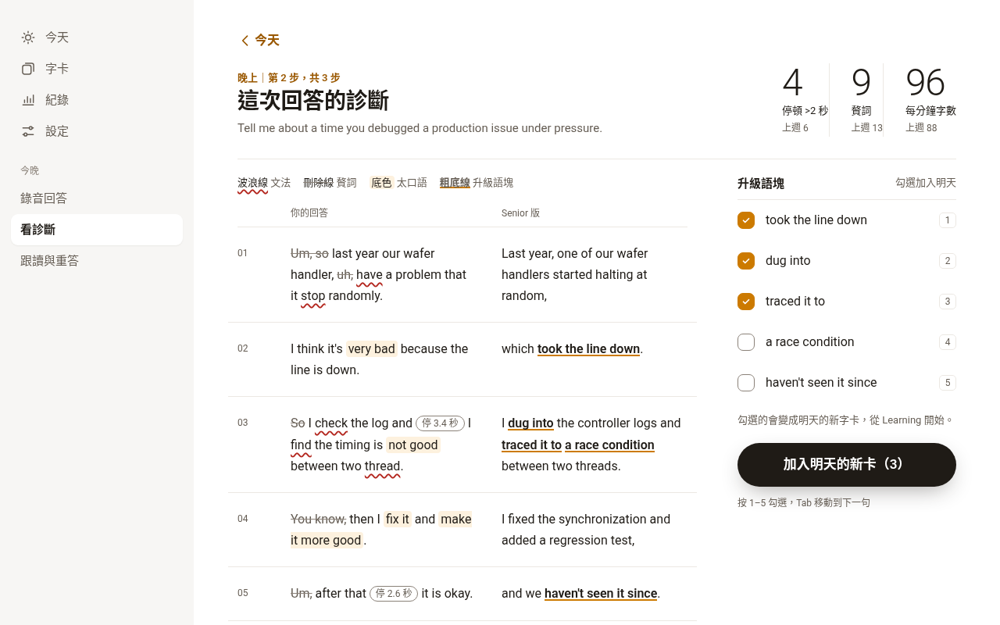
高級在哪裡（留白、層次、材質、動態）
幾乎不用卡片，只靠留白、極細大數字和髮絲線分層；唯一的顏色是琥珀；浮起的石墨色按鈕是唯一的「材質」。
和 round 1 的 A 差在哪裡
A 是滿版色塊和三圈；B 把顏色降到只剩一個琥珀點綴，用 30 格刻度代替圈圈，用文字句子代替計分板。
適合
- 喜歡安靜、不想被畫面催促
- 重視閱讀感，晚上診斷頁要舒服好讀
不適合
- 想要明顯的遊戲感、「拿到東西」的感覺
- 手機沒有底部分頁列，切換頁面要多點一下
R2-C 夜幕焦點
現在就做這一件：像鎖定畫面上的即時動態，一張深墨藍焦點卡告訴你此刻該做什麼。
- 專注
- 沉穩
- 有份量
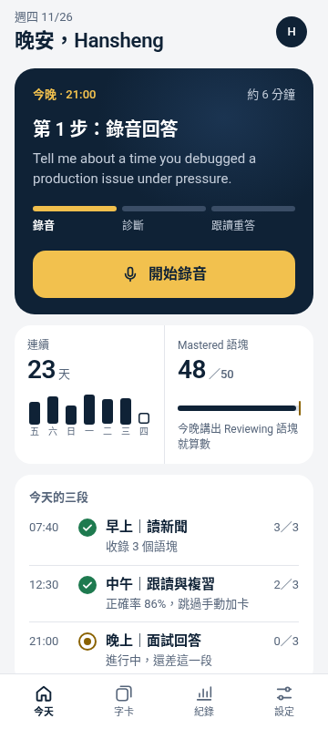
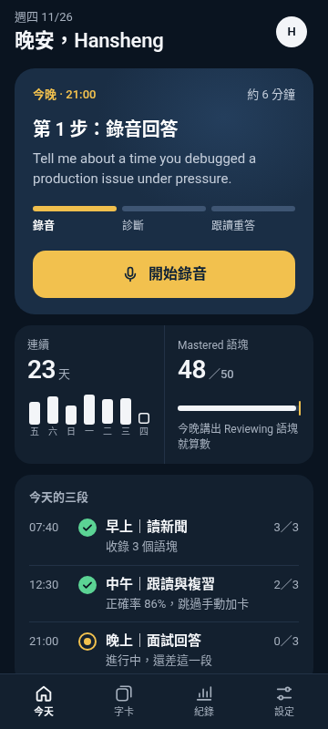
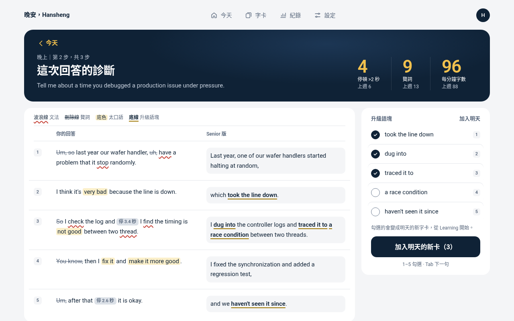
高級在哪裡（留白、層次、材質、動態）
深墨藍焦點卡的「材質」配上同色系微光；金色只用在最重要的一個數字和按鈕；資料密度高但對齊嚴謹，動態只在當下這一步輕輕呼吸。
和 round 1 的 A 差在哪裡
A 的鼓勵靠三圈和亮色計分板；C 只保留一張焦點卡和小柱狀圖，配色從鈷藍＋檸檬改成墨藍＋柔金，重心從「進度」改成「下一步」。
適合
- 晚上用得多、想要一打開就知道下一步
- 喜歡資料感（柱狀、分鐘、目標刻線）
不適合
- 偏好非常輕、非常白的畫面
- 深色焦點卡在白天淺色模式裡份量較重
Designer 推薦：R2-C 夜幕焦點
理由：english-coach 最重要的一段在晚上，C 的焦點卡直接回答「現在做哪一件」，深色模式也最自然。它的高級感來自材質對比、配色克制和嚴謹對齊，不靠 SF 字型，所以在你的 Android 手機（Roboto＋Noto Sans TC）上效果不打折。遊戲化保留在柱狀圖、50 目標刻線和金色數字，克制但看得到進步。
如果你想要最接近 iPhone 內建 App 的熟悉感，選 R2-A；如果你想要最安靜、最像手帳的感覺，選 R2-B。也可以混搭，例如 C 的首頁配 B 的診斷頁閱讀節奏。
深色模式建議：三個方向都已用色彩變數做好深色版（手機首頁深色截圖都通過 4.5:1）。建議產品預設「跟隨系統」（prefers-color-scheme），D2 再把深色版的診斷頁補齊；手動切換開關可以晚一點再做。
| 比較 | R2-A 分組 | R2-B 留白 | R2-C 夜幕焦點 |
|---|---|---|---|
| 版面 | 分組卡片清單＋半透明底部分頁列；電腦左側欄＋右側檢視欄 | 無卡片、只有髮絲線＋浮起按鈕；電腦 Things 式側欄＋右側摘要 | 深色焦點卡＋小資料卡＋時間軸；電腦上方膠囊導覽＋深色橫幅 |
| 字體 | 大標題 700＋細字數字 300 | 極細大數字 200＋文字句子 | 粗字數字 600、字級緊湊 |
| 色彩 | 冷灰＋鈷藍 | 暖白＋單一琥珀 | 墨藍＋柔金 |
| 鼓勵怎麼呈現 | 週膠囊（早中晚三格）＋重點句＋里程碑進度條 | 30 格連續刻度＋方角勾選框＋文字里程碑 | 當晚三段進度＋7 天柱狀＋50 目標刻線 |
| 新字型依賴 | 不用 | 不用 | 不用 |
這是 D1 最後一輪（§15.6）。請在手機和電腦都點開看看，回覆選哪一個（可以混搭）；選定後進 D2。
第 1 輪（A 三圈賽道、B 集章冊、C 螢光筆草稿）— 已收合，點開查看
依 D0 決定：活潑一點、有遊戲化鼓勵，但不做 Duolingo 翻版、不用 emoji 圖示。三個方向用同一組畫面比較：手機＝今天的課表首頁、電腦＝晚上口說診斷（AC-15 左右對照）。全部是假資料的靜態原型，不連後端。可以混搭，例如「B 的集章＋C 的逐句對照」。
A 三圈賽道
北極星：每天三圈，像運動手錶一樣把英文練習「跑完」。
- 有勁
- 計分板
- 一眼看到進度


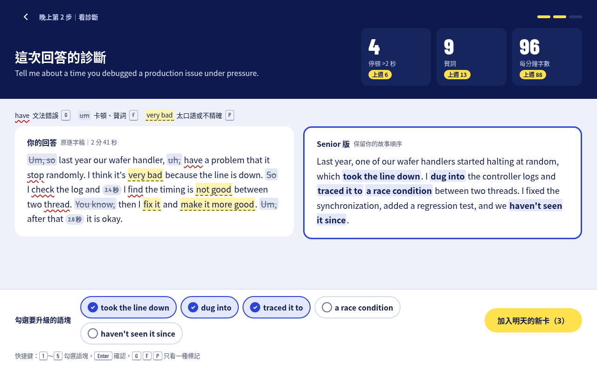


適合
- 遊戲化最直接：三段＝三圈，關圈的成就感很強，手機一眼看懂。
- 計分板式的數字（停頓、贅詞、字速）很有「練習數據」的感覺，符合工程師。
不適合／風險
- 三個同心圈和 Apple 健身「圓圈」很像，有撞臉風險，D2 要改成自己的圖形（例如跑道三條線道）。
- 需要一個新字型（Barlow Condensed），要 Architect 決定。
- 診斷是兩段整段文字，逐句對應要自己找。
參考（2026-11-26 實際打開）
- 同類／遊戲化：Apple「Close Your Rings」三圈與里程碑 apple.com/watch/close-your-rings
- 習慣打卡：Streaks（Apple Design Award）大字窄體＋圈狀進度 streaksapp.com
- 運動紀錄：Strava strava.com、Nike Run Club nike.com/nrc-app
- 字型：Barlow Condensed fonts.google.com/specimen/Barlow+Condensed
B 集章冊
北極星：每做完一段就蓋一個章，看著自己的集章冊一天天蓋滿。
- 好玩
- 手作印刷感
- 收集


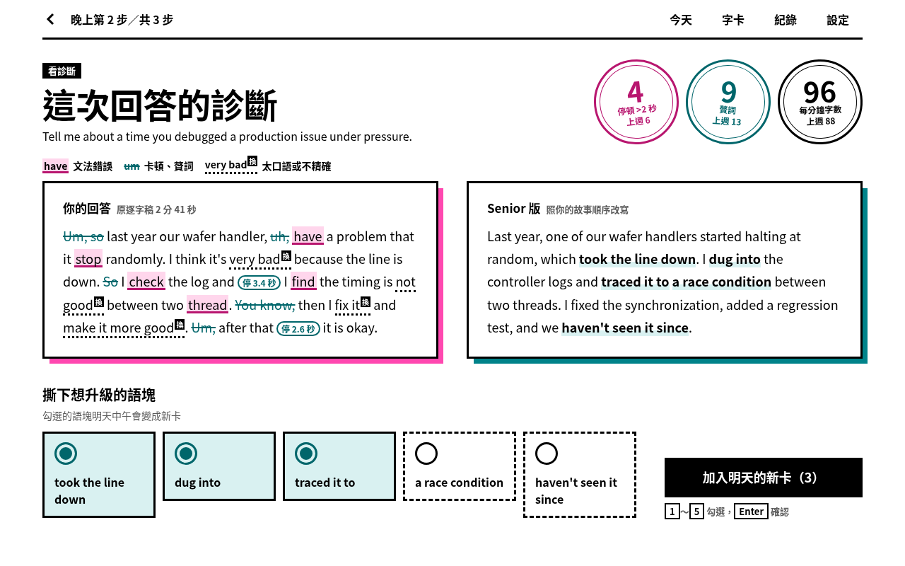


適合
- 「蓋章」剛好對應 PRD 的早中晚三格打卡（AC-21），完成回饋（蓋章動畫）自然又不幼稚。
- 最不像 Duolingo，也不像一般 AI 模板；不用新字型、不用新依賴。
不適合／風險
- 粗黑框與錯位色塊很有個性，每天看 80 分鐘可能偏吵；D2 要把診斷這類閱讀頁收安靜一點。
- 螢光粉只能當圖形，不能當字色（對比 3.09:1）。
- Android 上 Noto Sans TC 有沒有最粗字重「不確定」，沒有時會退成粗體（本截圖就是粗體）。
參考（2026-11-26 實際打開）
- 跨領域：日本車站紀念章（駅スタンプ）的集章文化 en.wikipedia.org/wiki/Eki_stamp
- Riso 油墨色與疊印 stencil.wiki Riso inks、en.wikipedia.org/wiki/Risograph
- 同類／溫和遊戲化：Gentler Streak（Apple Design Award）gentler.app
- 設計獎：Apple Design Awards「Delight and Fun」手繪、玩心的介面 developer.apple.com/design/awards
C 螢光筆草稿
北極星：把英文當成一份越改越好的稿子，用螢光筆畫出今天又進步的地方。
- 好讀
- 手寫筆記感
- 一句一句進步


適合
- 診斷最好讀：逐句對齊（像程式碼 diff 的左右對照），手機用逐句上下分段，最符合 AC-15。
- 長時間閱讀不累，英文內容用閱讀字型。
不適合／風險
- 遊戲化比較含蓄（劃記、螢光筆、里程碑小註記），可能不夠「活潑」。
- 需要一個新字型（Literata），要 Architect 決定。
參考（2026-11-26 實際打開）
- 寫作標註：Hemingway Editor 用不同顏色標出難句、贅字、簡單字 hemingwayapp.com
- 左右對照：GitHub 比較分支的 split diff docs.github.com（about comparing branches）
- 閱讀與畫重點：Readwise Reader readwise.io/read
- 同類（英文口說）：Speak speak.com、ELSA Speak elsaspeak.com
- 字型：Literata fonts.google.com/specimen/Literata
Designer 的推薦：B 集章冊，診斷頁借用 C 的逐句對照
理由：B 最符合「活潑、有遊戲化鼓勵」，而且鼓勵方式（蓋章）直接對應 PRD 早中晚三段打卡，不用新增徽章或點數功能；它同時離 Duolingo 和 Apple 健身圈最遠，也不用新字型。B 唯一的弱點是閱讀頁偏吵，所以晚上診斷建議改用 C 的逐句對照版面（保留 B 的配色與印章數字），電腦左右逐句、手機逐句上下分段。
如果你更想要「一眼看進度、運動感」，選 A；如果診斷好讀比活潑更重要，選 C。
| 比較 | A 三圈賽道 | B 集章冊 | C 螢光筆草稿 |
|---|---|---|---|
| 版面 | 計分板＋底部分頁列；電腦上方計分板、兩欄 | 集章格＋票券；電腦上方導覽、錯位紙張 | 文件式清單＋下方「下一步」列；電腦左側圖示列＋右側欄 |
| 字體 | 窄體數字＋系統黑體 | 只用系統黑體（粗細對比） | 襯線英文＋系統黑體 |
| 色彩 | 鈷藍＋檸檬黃 | 螢光粉＋藍綠＋黑 | 墨綠＋四色螢光 |
| 主視覺 | 三個進度圈 | 印章 | 螢光筆筆觸＋劃記 |
| 新字型依賴 | 要（Barlow Condensed） | 不用 | 要（Literata） |
請在手機和電腦上都點開看看，再回覆選哪一個（可以混搭），也可以說具體喜歡或不喜歡哪裡。